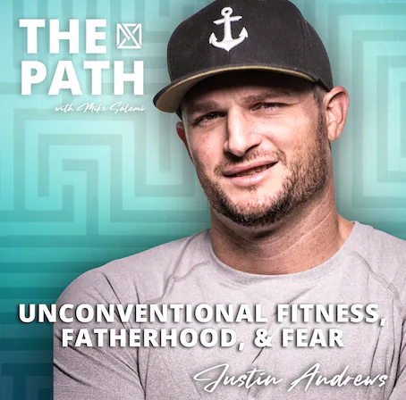

B875 · Unconventional Fitness, Fatherhood, & Fear
Hi {first_name},
Justin Andrews is one of the three co-hosts of the wildly popular fitness podcast, Mind Pump. Justin is really the resident expert on unconventional training at mind pump. In this episode, we break down the benefits of this kind of training for health, as well as how it can transfer to improving other aspects of life. We also dive deep into fatherhood and what it’s like for Justin, being so immersed in fitness and health, wanting to share that with his children while still allowing them to take on their own path.
On Episode 21 of The Path, Justin and I discuss:

Click here to listen on Apple.
Click here to listen on Spotify. Yours in Health, Mike |